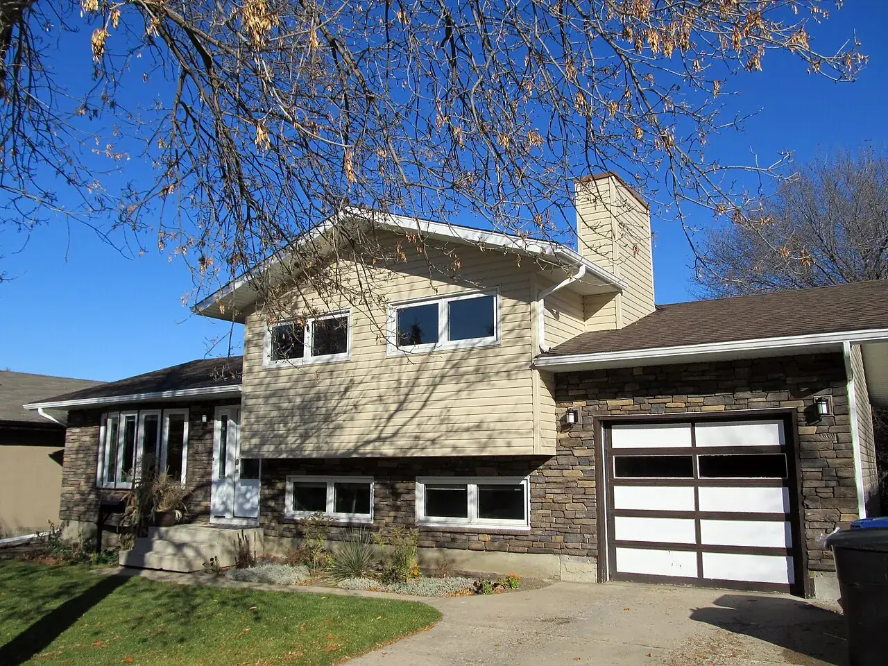
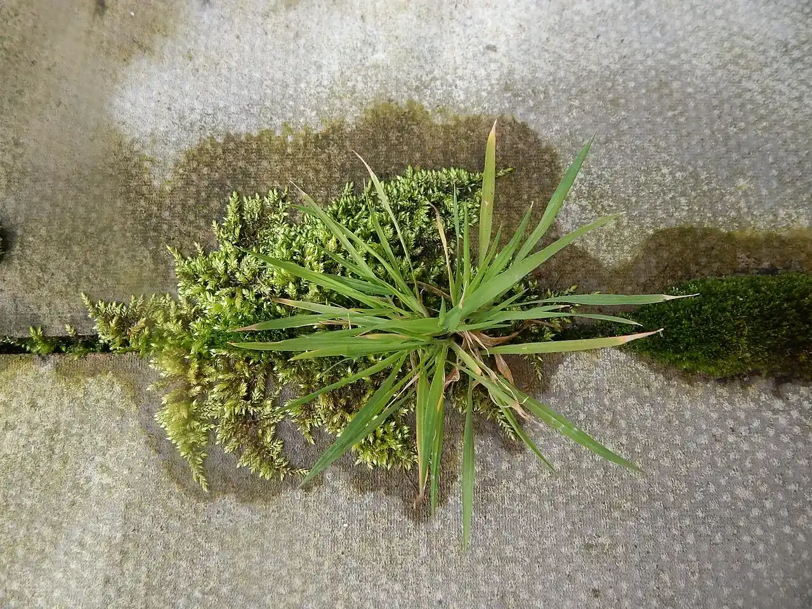
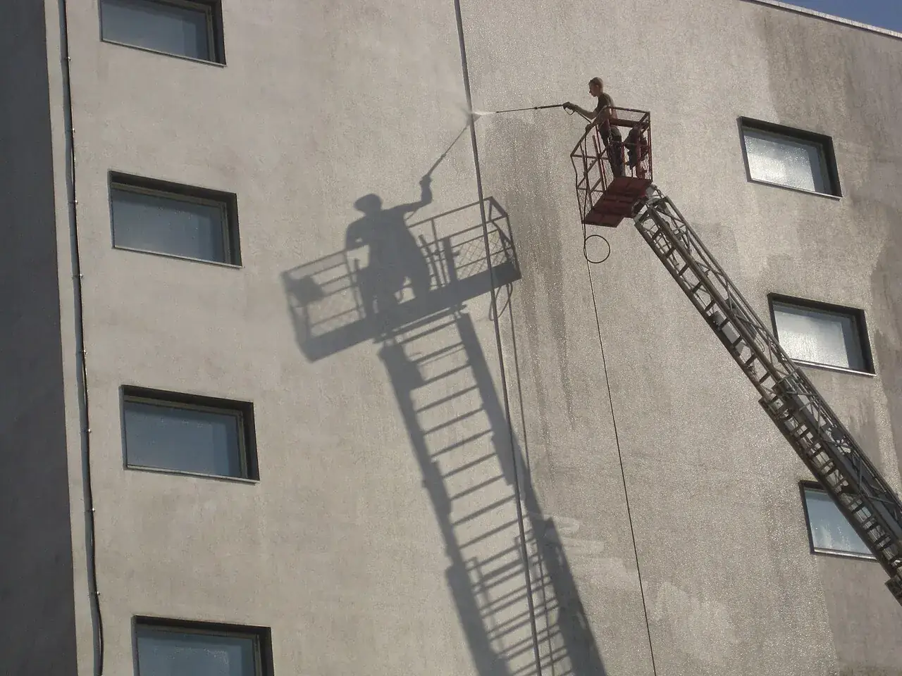
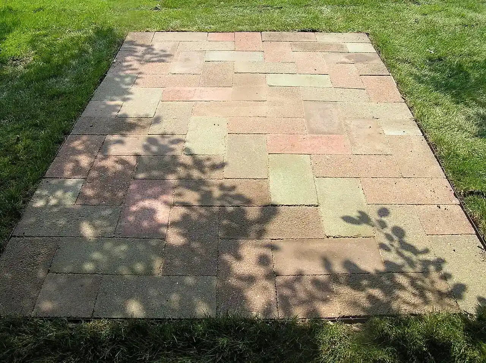
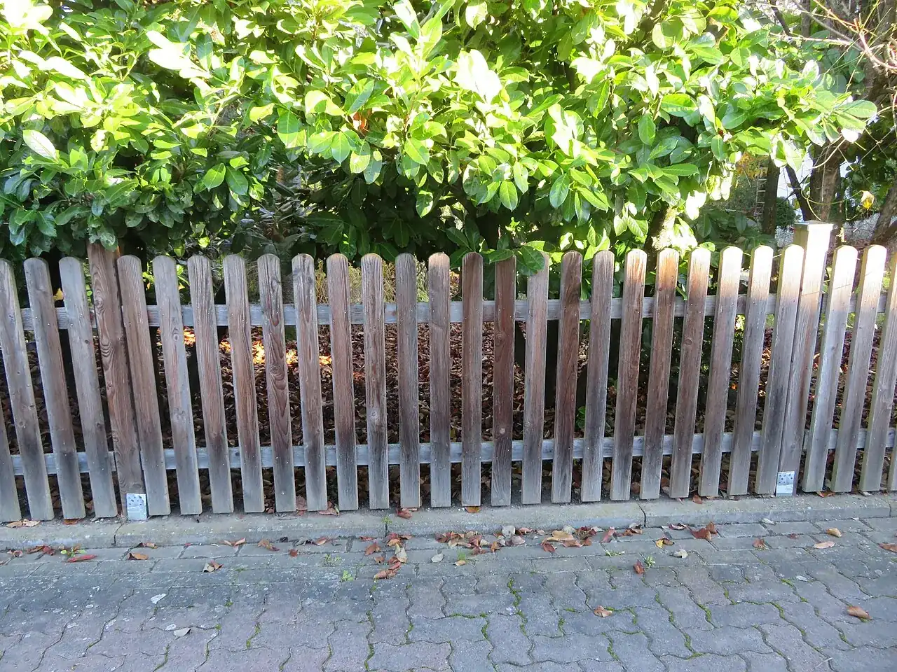

Free estimates within 20 miles of Westford
House and patio washing in Westford, MA
Vinyl siding, paver patios, composite decks and fences, washed by the owner, Doug Caggiano. Every job starts with a walk-through.

Services and job times
Siding and decks are most of the work.
- House wash3 to 4 hours
Vinyl siding, windows rinsed after
- Paver patio restoration2 to 3 days
Joints cleaned out, polymeric sand swept in
- Composite deck2 to 3 hours
Controlled pressure along the grain
- Fence cleaningUsually by the hour
Turbo nozzle, a light touch on wood
- Walkways and front stepsQuoted on site
Mold and green growth off the path
- Driveways, trim and wallsQuoted on site
Ask about any other surface

House washing for vinyl siding
A bleach solution does the work, so the pressure stays low.

1. Pre-rinse the siding
Solution on dry siding can leave marks, so plain water goes on first.
2. Foam on, bottom to top
Working upward keeps the solution from leaving streaks.
3. Let the solution sit
Long enough to kill the mold and loosen the grime.
4. Rinse from the roofline
Spraying almost parallel to the siding, then the windows and plants once more.
Questions before you book
What does a house wash cost?
It depends on size, surface and time. Estimates are free and in person, and I take cash, check or Venmo.
What do you need for a house wash?
A working outdoor spigot and a dry day. A light sprinkle is fine; in real rain we reschedule.
Can you wash near a pool?
Yes. Some dirt may get in, and I'll tell you before I start.
When can you come out for a wash?
The busy season runs mid-May through August, so book in spring for a summer slot.
How long does a house wash take?
About 3 to 4 hours. A composite deck takes 2 to 3, a patio restoration 2 to 3 days.
Which washing jobs do you turn down?
Ones washing would damage, like broken or heavily oxidized siding or a chewed-up wooden deck.
Paver patio restoration
A lot of power washing companies stop at a rinse. I take the mold and old sand out of every joint and re-sand it, so the pavers lock in and weeds stay out.
- Clear it and plan itDay 1
Furniture off, and we agree on a clean or a full restoration
- Surface cleaner passDay 1
An even clean with no wand stripes
- Blast the jointsDay 1
The step that makes it look new
- Let it dry completelyDay 2
Polymeric sand only sets on dry pavers
- Sweep in polymeric sandDay 2 or 3
Swept into every joint and set

Request a free quote
List every surface and I'll set a time to walk the property. Westford, Chelmsford, Groton, Acton and towns within about 20 miles.
